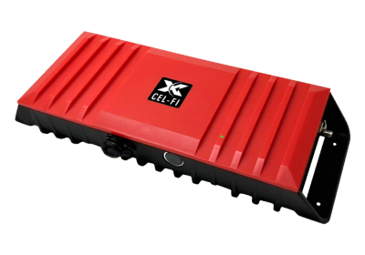
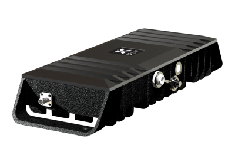
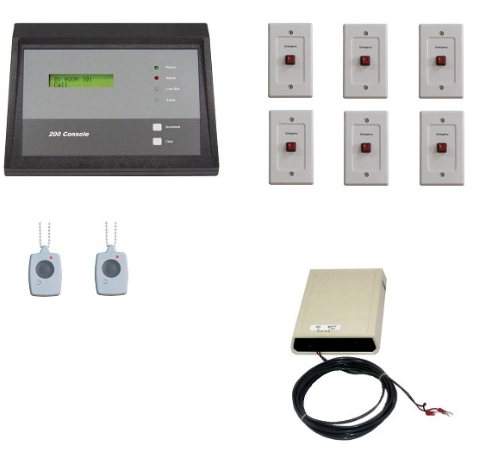
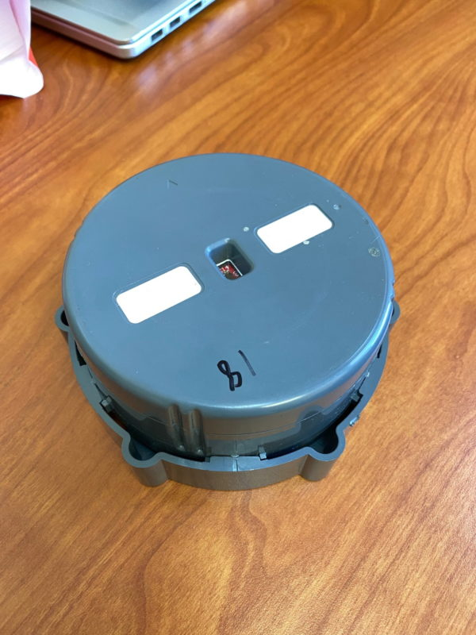
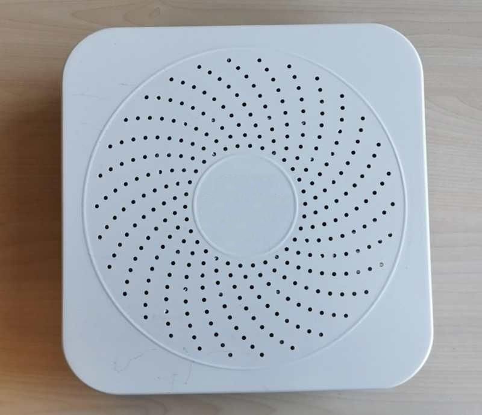
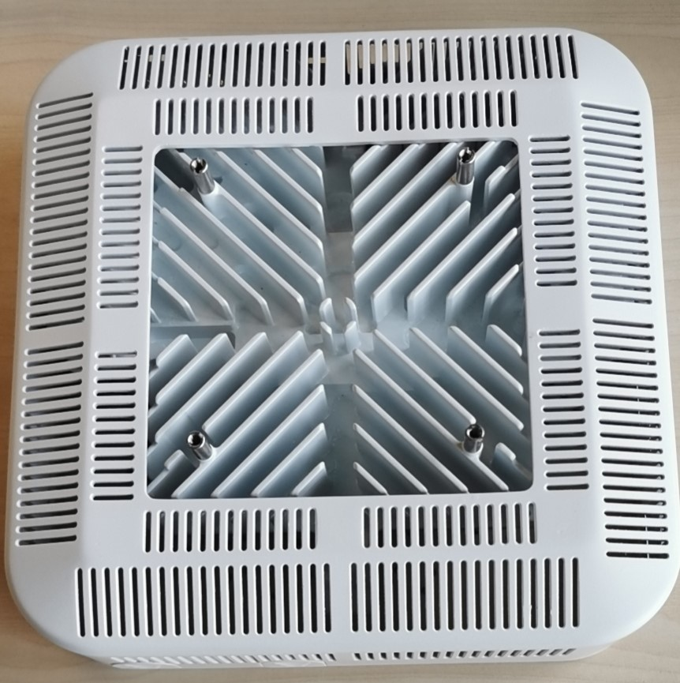
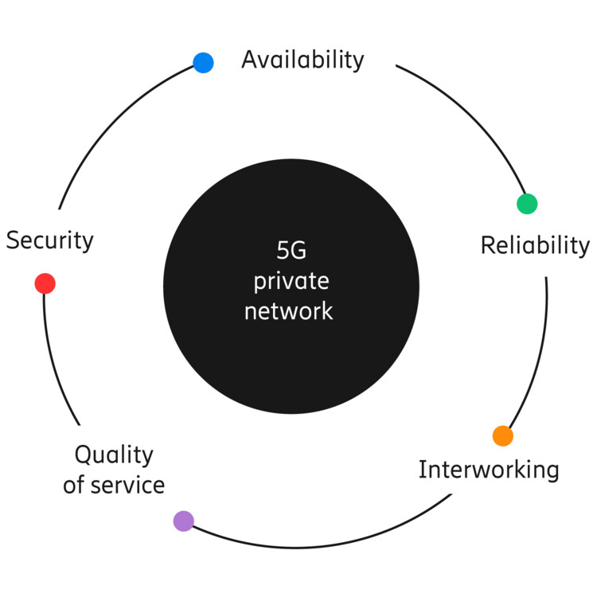

|  |
Cel-Fi QUATRA 4000
Cel-Fi QUATRA 4000 is an Active DAS Hybrid that solves the problem of poor cellular coverage in middleprise buildings.
Cel-Fi QUATRA 4000 delivers a cellular signal that is up to 1000x stronger, utilizing CAT 5e cabling for RF signal distribution
and Power over Ethernet. Cel-Fi QUATRA 4000 can be installed in just days, and at a price point that meets the middleprise budget.
Cel-Fi QUATRA 4000 is carrier grade, carrier approved, and guaranteed network safe.
|
|  |
Cel-Fi GO RED
The Cel-Fi GO RED FirstNet Booster delivers cellular coverage in buildings for emergency communications from police, fire, and medical
personnel. Cel-Fi GO RED with the Cel-Fi Antennas is the best way to ensure coverage in an emergency situation. Communication is not optional
in critical times, rely on equipment that ensures the best coverage.
|
|  |
Cel-Fi GO X/ Stationary
The Cel-Fi GO X Smart Signal Booster, the first carrier-class indoor/outdoor cellular coverage solution to feature industry leading 100 dB system
gain and Nextivity’s unconditionally network safe guarantee. Cel-Fi GO X leverages the award-winning Intelliboost signal processing to deliver the
industry’s largest coverage footprint with the best voice and data wireless performance. Cel-Fi GO X is NEMA 4 rated weather resistant and does not
interfere with other wireless devices. This multi-carrier solution is ideal for use in commercial properties, government buildings, agricultural settings,
small manufacturing operations, rural areas, businesses, and large homes.
|
|  |
Hotel Panic Button Solution
The Hotel Duress Alarm Push Button Stations provide an effective quick way to alert personnel of an emergency. While providing a secure
connection and communication system with security and emergency personnel, these Hotel Duress Push Button Stations can be installed anywhere
in your facility affording quick and easy access while also granting your staff and guests a level of safety knowing help is simply a button
away.
|
|  |
Sample Trash Sensor Device
The Internet of Things (IoT) can greatly optimize collection services and reduce operational costs for major public spaces- such as theme parks,
cities, college campuses- transitioning waste management into data-driven collection processes. Powered by the Sigfox Network Service, smart waste
management solutions use sensors placed in waste receptacles to measure fill levels and notify waste collection services when bins are ready to be
emptied.
|
|

coreNOC 5G NR sub-6GHz RRU Base Station (front side)

coreNOC 5G NR sub-6GHz RRU Base Station (back side)

5G Private Network Requirements
|
5G & CBRS Solutions
A new generation of private 5G networks is emerging to address critical wireless communication requirements in public safety, infrastructure, and industry.
These private networks are physical or virtual cellular systems that have been deployed for private use by governments or companies.
5G technologies offer a wide variety of benefits that meet the requirements of business and mission critical applications, such as:
In addition to 5G solutions, K&M Systems is also registered in the WInnForum Certified Professional Installer (CPI) database as a
Citizen’s Broadband Radio Service (CBRS) CPI ready to install and commission radio devices operating in the 3.5GHz band.
|